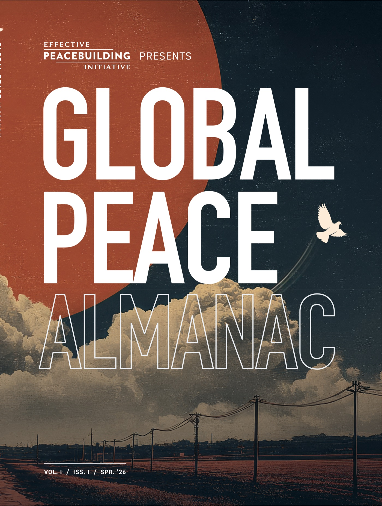
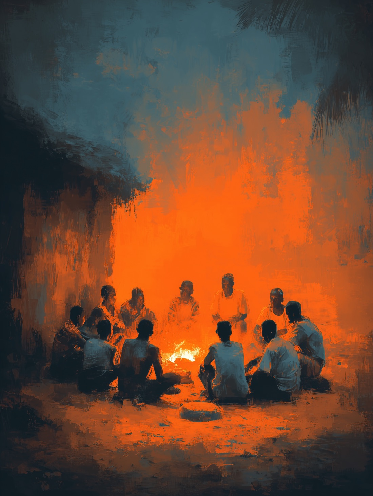

The Effective Peacebuilding Initiative is an independent nonprofit working to improve how the world understands and practices peacebuilding. The Almanac is its annual record: fifteen commissioned pieces, printed once, released here one entry a month. Hover any entry to reveal its cover.
- Entries
- 15
- Open
- 03
- Sealed
- 12
- Next release
- Aug 1
Part I The State of Peacebuilding
01
The Liberal Peace Is Dead. What's Replacing It?
Why the postwar template for peace lost its authority, and what is taking its place.
Open
05.26
The Liberal Peace Is Dead. What's Replacing It?
Read the full entry →
02
New Peacemakers and Old International Institutions
The rising actors reshaping mediation while old institutions struggle to keep up.
Open
06.26

New Peacemakers and Old International Institutions Read the full entry →
03
A World in Turmoil: What Global Conflict Trends Tell Us
What the latest global conflict data actually says about where we are headed.
Open
07.26
A World in Turmoil: What Global Conflict Trends Tell Us
Read the full entry →
04
The Peacebuilding Field Is Experiencing an Identity Crisis. But That's How We Grow.
The field is unsettled, and that turbulence may be the surest sign of its growth.
Opens next
08.26
Opens nextThe Peacebuilding Field Is Experiencing an Identity Crisis. But That's How We Grow.
Opens next · Aug 1
Part II What Works, and How Do We Know?
05
On Evidence, Experimentation and Risk
A candid conversation about proof, failure, and betting on what might work.
Sealed
09.26
SealedOn Evidence, Experimentation and Risk
Sealed · Opens 09.26
06
Is There Proof That Conflict Prevention Really Works?
Testing the hard claim that prevention saves more than it ever costs.
Sealed
10.26
Sealed

Is There Proof That Conflict Prevention Really Works? Sealed · Opens 10.26
07
Measuring What Gets Missed: ACLED's Peace Agreement and Ceasefire Tracker
Building the data infrastructure to see ceasefires and agreements as they happen.
Sealed
11.26
SealedMeasuring What Gets Missed: ACLED's Peace Agreement and Ceasefire Tracker
Sealed · Opens 11.26
08
Why Peacebuilding Is Falling Short, and Four Practices to Maximize Investments
Four practical shifts to get more peace from every dollar committed.
Sealed
12.26
SealedWhy Peacebuilding Is Falling Short, and Four Practices to Maximize Investments
Sealed · Opens 12.26
Part III Peace in Practice
09
What Local Ownership Requires of Non-Locals
The discipline outsiders need before handing power back to communities.
Sealed
01.27
SealedWhat Local Ownership Requires of Non-Locals
Sealed · Opens 01.27
10
At Peace with AI?: What Still Needs Interrogating
The questions we still have not asked about automation in conflict zones.
Sealed
02.27
SealedAt Peace with AI?: What Still Needs Interrogating
Sealed · Opens 02.27
11
A Model for Digital Peacebuilding: Bridging Divides in Ethiopia
How online bridge-building held up against real division in Ethiopia.
Sealed
03.27
SealedA Model for Digital Peacebuilding: Bridging Divides in Ethiopia
Sealed · Opens 03.27
12
Reclaiming Narrative Power in a Militarized World
Contesting the stories that keep militarized worldviews in place.
Sealed
04.27
SealedReclaiming Narrative Power in a Militarized World
Sealed · Opens 04.27
Part IV The Future of Peacebuilding
13
In the Age of AI: Why Data Autonomy and Cooperative Sense-Making Are Peacebuilding Imperatives
Why data autonomy and shared sense-making are now peacebuilding infrastructure.
Sealed
05.27
SealedIn the Age of AI: Why Data Autonomy and Cooperative Sense-Making Are Peacebuilding Imperatives
Sealed · Opens 05.27
14
Revitalizing the Peace Ecosystem: A New Strategy for Peace Philanthropy
A new strategy for the philanthropy that funds the field.
Sealed
06.27
SealedRevitalizing the Peace Ecosystem: A New Strategy for Peace Philanthropy
Sealed · Opens 06.27
15
Reimagining Security from the Ground Up
Starting over from human needs rather than the machinery of defense.
Sealed
07.27
SealedReimagining Security from the Ground Up
Sealed · Opens 07.27
Release of records
The complete Vol. I file opens when Vol. II publishes.
All 250 printed copies are accounted for. Waitlist members receive the complete Volume I PDF, every entry and endnote, on the day Volume II enters the record.